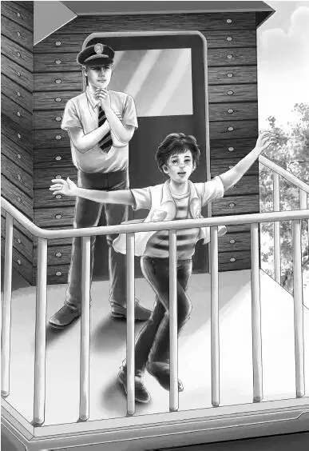

One morning Benny Alden sat in his room thinking. The four Alden children lived with their grandfather， James Alden.
“What a lot of adventures we have had，” thought Benny. “First we lived in a boxcar in the woods. That was fun！Then after we found Grandfather， we have been to so many places and had so many surprises. By the way—”
Benny had a sudden thought. He ran downstairs as fast as he could. He found his grandfather at his desk. Violet was nearby， sewing on a button.
Benny said， “Grandfather， I just remembered you had a plan for this summer！”
Jessie walked in. “Yes， you did，” she said. “And then we suddenly went away and found the mystery in the schoolhouse.”
Henry appeared at the door.“And that spoiled your plan， Grandfather，” he said.
“Oh， no，” said Mr. Alden. “It didn’t spoil my plan at all. We can still go on this trip if you want to.”
“Of course we want to！” said Violet. “You always have such wonderful ideas.”
“Come and sit under the trees，” said Mr. Alden， “and I’ll tell you all about it. Thank you， my dear， for sewing on my button.” He put on his coat.
Watch， the dog， trotted along with Jessie. He lay down on her feet.
Grandfather began， “You see I have a friend who owns a railroad.”
“A railroad！” said Benny.
Mr. Alden smiled. “Yes， it is called the Little North Railroad. Sometimes my friend lets people rent an old-fashioned wooden caboose. It is put on the end of a freight train and travels along with the train. So I thought we could take a trip in a caboose.”
“What a neat idea！” said Benny. “I never saw the inside of a caboose.”
“Neither did I，” said Mr. Alden， smiling.
Henry said， “ That would be an adventure for sure. Where could we go？”
“Anywhere the Little North Railroad goes.”
Violet asked， “Have you really rented a caboose， Grandfather？”
“Yes， my dear， I have rented two.” His eyes twinkled. “I was sure one of you would remember my plan. We can have two cabooses， one for the girls， and one for Henry， Benny， and me.”
“And we can get together for meals，” said Benny.
Henry laughed at his younger brother. “Always thinking of something to eat， Ben，” he said.
“I like to eat，” said Benny. “Do we do our own cooking？”
“Yes，” said Mr. Alden. “That will be part of the fun. Every caboose has a few pans and dishes in it. There is always a stove and a sink， and an icebox， too. You may want to buy more dishes， Jessie. You are the housekeeper.”
“Oh， I’d rather use the caboose dishes. It would be fun to try，” said Jessie. “Why can’t we drive down to the freightyard now？We can see for ourselves what a caboose is like.”
“Just what I planned，” said Grandfather， getting up.
Henry got out the station wagon. Everyone climbed in.
Benny saw the two cabooses first. He said， “Oh， they are not just alike！One is big and one is little.”
“There must be some reason，” said Grandfather. “Just look at the new red paint on the big one！We’ll soon find out.”
The conductor was on the steps of the small caboose. When he saw the family coming， he smiled and got off the train to meet them. He said， “Good morning. You must be the Aldens. My name is Carr.”
Benny said， “That’s neat！Your name is Carr， and you take care of cars.”
“That’s right. I hear plenty of jokes about my name.”
Mr. Alden said， “My granddaughters， Jessie and Violet， want to see where they are going to keep house.”
“Fine！” said Mr. Carr. “Climb right in and look around all you like. I want to tell you， Mr. Alden， that the big caboose hasn’t been used lately. It had to be painted. But I thought it would be better for you because the windows are much bigger. You can sit by the window and read. That big caboose has some history， but you’ll hear about that later.”
As they went up the steps of the small caboose， Benny said in a low voice to his brother， “Did Mr. Carr say history or mystery？”
“He said history，” said Henry， laughing. “But I’m sure you’ll think there is a mystery， too.”
“No，” said Benny. “I don’t need a mystery. Just traveling in a caboose is good enough for me.”
The Aldens began to look around. Jessie opened the icebox.
Mr. Carr said， “You see it is small. We stop often for ice and water. But you will have to take canned food with you. Then sometimes we stop on a siding for an hour or two， and you can go shopping.”
Henry took the cover off the little stove and looked in. He said， “This seems to run on bottled gas.”
“Right，” said Mr. Carr. “If you are cold， light the stove. You’ll get a little heat.”
“I shouldn’t think it would get very cold in August，” said Henry.
“Well， it does. But there are plenty of blankets. There are sheets and towels， too. And see， the beds are bunks.”
“Oh， boy， I’d like the top bunk！” said Benny.
“You can have it，” said Henry， laughing. “I’d rather have the lower one， anyway.”
Grandfather said， “Look！The mattresses are covered with old black leather. My friend asked me if I wanted new covers， and I said no. I thought you’d all like the caboose just as it always was.”
Then the Aldens went across from the little caboose to the big one.
But Benny went right through to the back platform. He said， “Oh， this is just the place for me！There is room for three. This is where I shall sit on the very end of the train and watch the country go flying by！”
Mr. Carr laughed. He said， “When do you want to go， Mr. Alden？I have a short freight that leaves tomorrow. I’m going on that one myself. Then there is another going the next day.”

Everyone looked at Benny. He said just what they knew he would. “Let’s go tomorrow！”
Grandfather smiled at Mr. Carr. He said， “My family likes to move fast. We’ll start tomorrow.”
“Be here before one o’clock， then，” Mr. Carr said. “Be sure to bring everything you need.”
The Aldens walked back to the station wagon. Jessie was already making a list of canned food to buy.
Suddenly Benny said， “The big caboose was quite different. Did you notice？”
“Yes， it was much better，” said Grandfather. “The floor was better， and the walls were better.”
Benny said， “Did you notice that the walls looked as if some fancy wood had been taken off？And there were curtain rods on the windows， but no curtains.”
Henry said， “Of course it looked new because it had just been painted red.”
But Benny had begun to wonder. The last thing he said when he went to bed was， “That big caboose has a history. Maybe it has a mystery， too.”